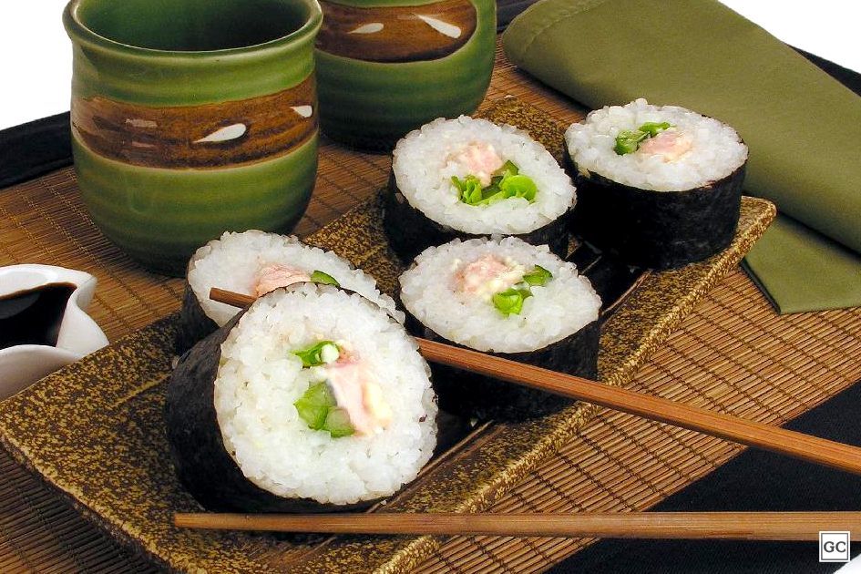

Como Fazer Sushi:

Ingredientes para 8 porções
- 1- 2 xícaras (chá) de arroz japonês
- 2- 3 xícaras (chá) de água
- 3- 1/2 xícara (chá) de vinagre japonês para sushi (tozan)
- 4- 2 e 1/4 xícaras (chá) de açúcar
- 5- 1/2 colher (café) de sal
- 6- 1 colher (café) de realçador de sabor
- 7- 1/4 xícara de shoyu
- 8- 1 saquinho de tempero à base de peixe bonito
- 9- 1 cenoura cortada em tiras no sentido do comprimento
- 10- 15 vagens
- 11- 1 pacote de nori (algas)
Passo a passo:
- 1-Em uma panela colocar o arroz e a água e levar ao fogo para cozinhar.
- 2- Quando levantar fervura, mexer e deixar cozinhar em fogo brando.
- 3- Misturar todos os ingredientes em uma tigela, misturando aos poucos, ao arroz cozido.
- 4- Ir experimentando para ver o tempero.
- 5- Reservar cerca de 1 colher (sopa) do tempero para fechar os sushis.
- 6- Colocar todos os ingredientes do sushi de verduras em uma panela, exceto o gengibre e deixar cozinhar até ficarem macios.
- 7- Desligue o fogo e escorra os sushis.
- 8- Com a ajuda de uma esteira própria para enrolar sushi, coloque o nori, com o lado que brilha voltado para dentro (onde se colocará o arroz)
- 9-Preencher o nori com o arroz, que deverá estar frio.
- 10-Deixar dois dedos do nori sem preencher com o arroz.
- 11- Bem no centro colocar 2 tiras de cenoura, 2 tiras de vagem e tirinhas de gengibre (1 fileira).
- 12- Passar um pouquinho do tempero que usou para o arroz no local do nori onde não foi preenchido com o arroz.
- 13- Enrolar do sentido de onde está o arroz para o sentido da onde não foi colocado o arroz, para que grude.
- 14- Tire a esteirinha e corte os sushis, com espessura de cerca de 2 dedos cada um